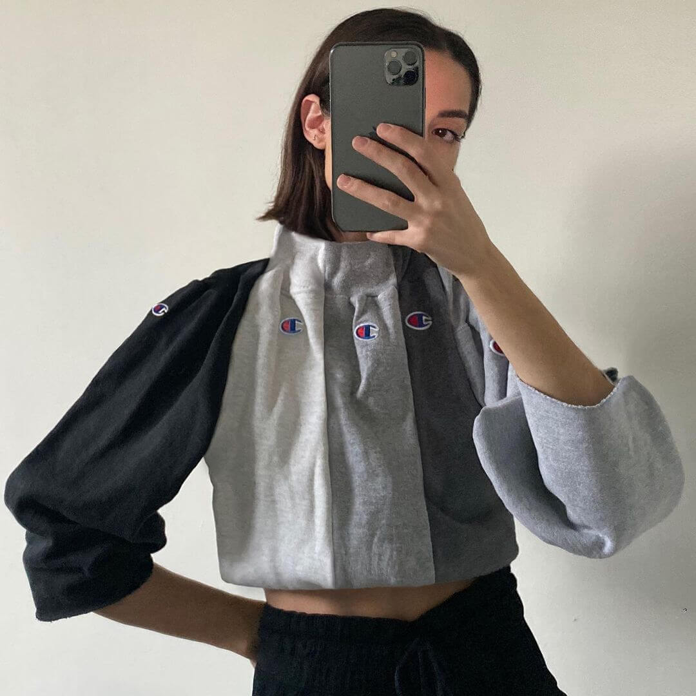
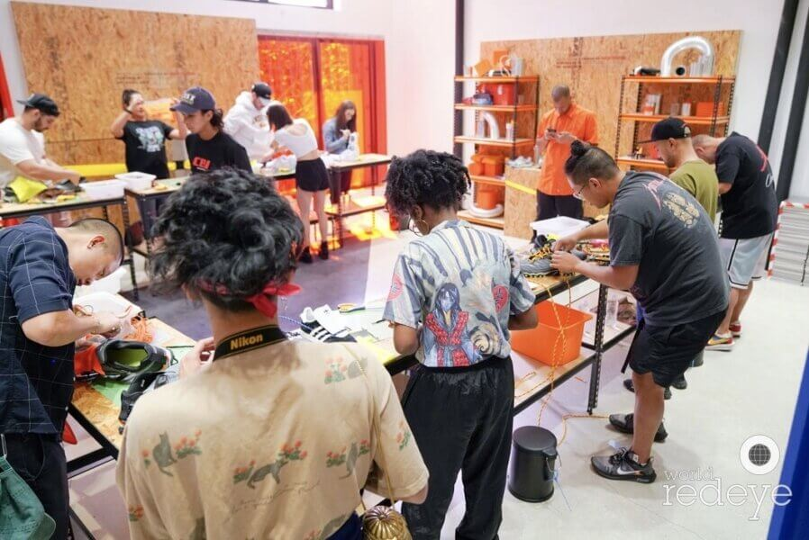

Nicole McLaughlin


Taking a tongue-in-cheek approach to her creative process, Nicole has transformed old volleyballs into slippers, camera bags into bralettes, and crafted board shorts from packets of Haribo gummies. This unexpected translation of materials allows her to uniquely highlight the message of sustainability—a key element to her success in changing the perception around waste and sustainable design.